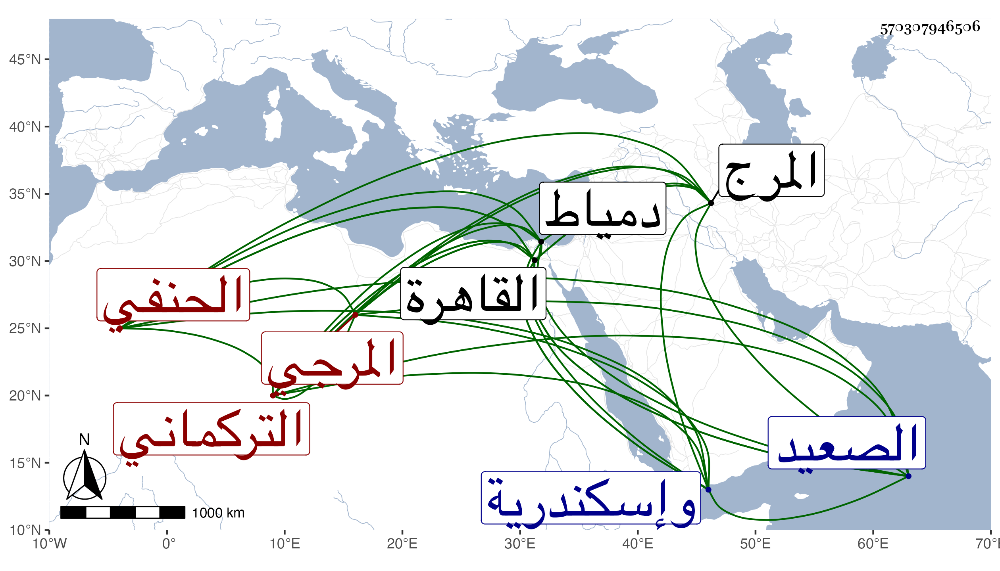

0902Sakhawi.DawLamic.ITO20230111-ara1.EIS1600.570307946506
Biography ID: 570307946506
893
علي بن عمر بن عبد الله بن موسى بن محمود بن حاجي العلاء بن الركن ابن الجمال التركماني المرجي الحنفي ابن الصوفي . ولد بعد سنة خمس وتسعين وسبعمائة بالمرج ونشأ بها فقرأ القرآن وتلا به لأبي عمرو على الزراتيتي بالقاهرة وحضر مجلس السراج البلقيني وأجاز له عائشة ابنة ابن عبد الهادي وآخرون في استدعاء شيخنا أبو النعيم المستملي المؤرخ سنة أربع عشرة . ولقيته بالمرج بين الخانقاه والقاهرة فأخذت عنه وكان خيرا شهيرا بناحيته من مقطعي بلده دخل دمياط وإسكندرية والصعيد وغيرها . ومات بعد أن خرف بقليل بعد سنة ستين رحمه الله .
